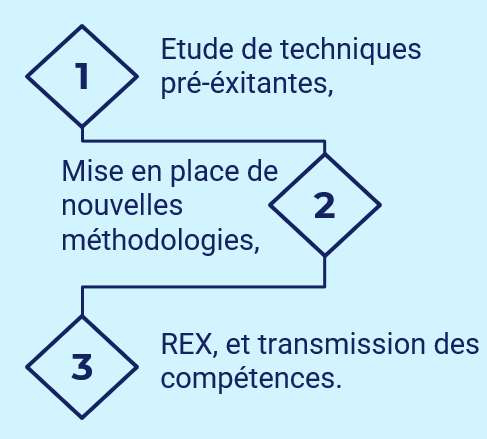

Apprentissage Critique : Produire une procédure d'installation et de mise en service d'un système (AC34.02)
Au cours de ma troisième année de BUT GEII, en alternance chez SNCF Voyageurs, j'ai été chargé de la mise en service industrielle d'un nouvel équipement de maintenance : le banc de test CL60B de Phénix Technologies. L'enjeu dépassait la simple installation physique. Il s'agissait de mener une investigation approfondie pour caractériser les propriétés électrotechniques et électromagnétiques des circuits magnétiques des moteurs de traction de l'ensemble du parc ferroviaire, afin de valider la conformité de ce nouveau système face aux exigences industrielles de la SNCF.
Le banc de test CL60B de Phénix Technologies sert à diagnostiquer l'état du circuit magnétique d'un moteur électrique (stator ou rotor/induit séparé). Ce circuit magnétique étant composé d'un empilement de fines tôles isolées et de bobines, notre objectif est de mesurer la qualité de cette isolation.
La SNCF Voyageurs disposait déjà de techniques de mesure des pertes fer. Mon travail s'est structuré autour d'une démarche d'investigation et de comparaison, puis de test et de transmission de compétences.

Ce mode opératoire a conclu mon étude sur le banc de test de pertes fer CL60B. Lors de sa rédaction, j'ai veillé à ce qu'il soit très facilement compréhensible, son rôle étant d'accompagner un agent habilité à tester des moteurs de traction ferroviaire, notamment en y injectant de forts courants. La rigueur et la sécurité ont donc été les axes principaux sur lesquels j'ai dû insister.
Ce document d'ingénierie met en lumière les verrous techniques et les anomalies rencontrés lors des premières configurations. Il constitue une base précieuse durant la phase d'investigation, en formalisant les axes de recherche à prioriser avant de reprendre les tests.
Document technique final faisant office de livrable officiel, synthétisant la méthodologie validée pour la mesure des pertes fer sur le parc moteur.
La mise en service d'un équipement industriel ne se résume pas à son raccordement électrique. Cette expérience m'a prouvé qu'installer un système exige une compréhension pointue de la physique sous-jacente (ici, les phénomènes d'induction et de pertes fer magnétiques). En poussant mes recherches jusqu'à tester les limites du banc sur tout le catalogue de moteurs, j'ai adopté une posture d'ingénieur d'essais. Enfin, la rédaction du mode opératoire m'a fait prendre conscience de l'importance de la vulgarisation technique : un équipement de pointe n'a de valeur en entreprise que si ses méthodes d'utilisation sont parfaitement documentées et accessibles aux opérateurs de terrain.